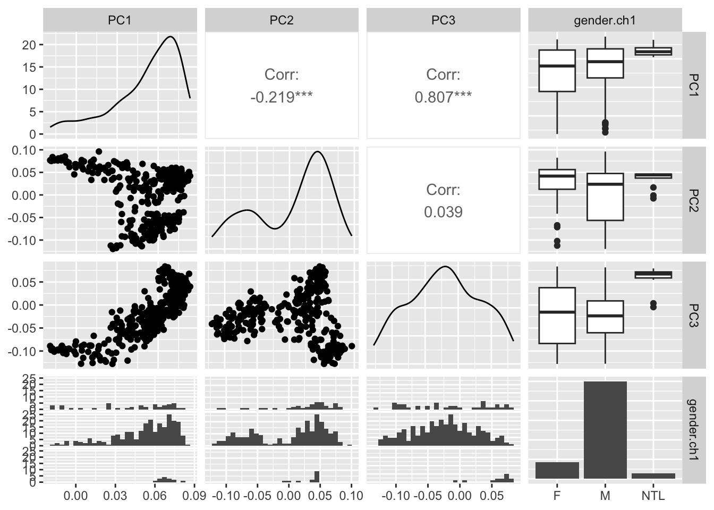

library(GEOquery)
library(SummarizedExperiment)16 EDA with PCA
gse <- getGEO("GSE30219")[[1]]Found 1 file(s)GSE30219_series_matrix.txt.gzse <- as(gse, "SummarizedExperiment")sds = apply(assay(se, 'exprs'), 1, sd)
hist(sds)
sub_se = se[order(sds,decreasing = TRUE)[1:500],]16.1 PCA
PCA is a method for dimensionality reduction. It is a linear transformation that finds the directions of maximum variance in a dataset and projects it onto a new subspace with equal or fewer dimensions than the original one. The orthogonal axes (principal components) of the new subspace can be interpreted as the directions of maximum variance given the constraint that the new feature axes are orthogonal to each other.

pca = prcomp(assay(sub_se,'exprs'),10)The PCA algorithm results in a rotation matrix that can be used to transform the original data into the new subspace. The rotation matrix is stored in the rotation slot of the prcomp object. The prcomp function also stores the coordinates of the samples in the new subspace in the x slot.
str(pca)List of 5
$ sdev : num [1:307] 32.98 19.42 13.91 9.79 7.65 ...
$ rotation: num [1:307, 1:307] 0.0704 0.0724 0.0612 0.0786 0.0735 ...
..- attr(*, "dimnames")=List of 2
.. ..$ : chr [1:307] "GSM748053" "GSM748054" "GSM748055" "GSM748056" ...
.. ..$ : chr [1:307] "PC1" "PC2" "PC3" "PC4" ...
$ center : Named num [1:307] 6.79 6.73 6.69 7.53 6.72 ...
..- attr(*, "names")= chr [1:307] "GSM748053" "GSM748054" "GSM748055" "GSM748056" ...
$ scale : logi FALSE
$ x : num [1:500, 1:307] 2.97 -28.99 35.21 73.57 16.08 ...
..- attr(*, "dimnames")=List of 2
.. ..$ : chr [1:500] "209125_at" "209988_s_at" "223678_s_at" "218835_at" ...
.. ..$ : chr [1:307] "PC1" "PC2" "PC3" "PC4" ...
- attr(*, "class")= chr "prcomp"We can plot the samples using the first two PCs as the x and y axes.
plot(pca$x[,1], pca$x[,2], pch=20)
If we use ALL the PCs, we can perform a matrix multiplication to get the original data back.
orig_data = pca$rotation %*% t(pca$x) + pca$center
orig_data[1:5,1:5] 209125_at 209988_s_at 223678_s_at 218835_at 201820_at
GSM748053 4.400830 3.078285 11.389715 13.541261 5.056486
GSM748054 4.349534 3.079797 10.637554 12.944545 5.030666
GSM748055 3.661923 3.467936 5.956831 9.725079 4.986433
GSM748056 10.289194 3.447669 9.311594 12.744177 11.284134
GSM748057 3.354648 3.141168 10.467811 12.896846 5.132626Compare to the original data:
assay(sub_se,'exprs')[1:5,1:5] GSM748053 GSM748054 GSM748055 GSM748056 GSM748057
209125_at 4.400830 4.349534 3.661922 10.289194 3.354648
209988_s_at 3.078285 3.079797 3.467936 3.447669 3.141168
223678_s_at 11.389715 10.637554 5.956831 9.311594 10.467811
218835_at 13.541261 12.944545 9.725079 12.744177 12.896846
201820_at 5.056486 5.030666 4.986433 11.284134 5.132626And the same thing, but using only the first 3 PCs:
orig_data_3pcs = pca$rotation[,1:3] %*% t(pca$x[,1:3]) + pca$center
orig_data_3pcs[1:5,1:5] 209125_at 209988_s_at 223678_s_at 218835_at 201820_at
GSM748053 3.741698 5.017506 12.556488 14.14917 4.494767
GSM748054 4.984482 4.849935 11.163909 13.32128 5.858529
GSM748055 4.278005 5.601578 10.669427 12.52485 5.169032
GSM748056 9.992930 4.184458 9.537825 12.58268 10.721712
GSM748057 3.935526 5.254038 11.660657 13.79476 4.93652116.2 Variance explained
The pca object has a slot called sdev. Variance is the square of sdev, so we can calculate the variance by squaring sdev.
var_explained = pca$sdev ^ 2The total variance is just the sum of all the variances:
tot_variance = sum(var_explained)And the proportion of the variance explained by each PC is then
prop_var_explained = var_explained/tot_variance
head(prop_var_explained)[1] 0.44491221 0.15436508 0.07911613 0.03923027 0.02394878 0.01996772If we plot the prop_var_explained, it is called a scree plot and can help us to choose an appropriate number of PCs to “keep” in order to reduce the dimensionality.
plot(prop_var_explained[1:15], type='b')
Examine the plot. How many PCs would you keep?
16.3 Add PCs to our SummarizedObject
The rotation matrix looks like this:
pca$rotation[1:5,1:5] PC1 PC2 PC3 PC4 PC5
GSM748053 0.07039994 0.04923152 0.071208811 0.043105679 -0.01380099
GSM748054 0.07240983 0.02995164 0.040128439 0.022083881 -0.04919873
GSM748055 0.06121408 0.04178774 0.033921667 0.026014251 0.02475344
GSM748056 0.07864141 -0.03850656 -0.006069839 -0.001976577 0.01670609
GSM748057 0.07348980 0.04772108 0.045980275 0.043630946 0.06304790So, PC components for each sample are in columns and samples are in rows. For colData, the samples are also in rows. So, we can join the first (in my case) six PCs to the SummarizedExperiment, sub_se, for later use.
pcmat = pca$rotation[,1:6]
# The names must be set and must match the samplenames in colData
rownames(pcmat) = rownames(pca$rotation)
colData(sub_se) = cbind(colData(sub_se), pcmat)We now have the PCs stored conveniently with our SummarizedExperiment.
colnames(colData(sub_se)) [1] "title" "geo_accession"
[3] "status" "submission_date"
[5] "last_update_date" "type"
[7] "channel_count" "source_name_ch1"
[9] "organism_ch1" "characteristics_ch1"
[11] "characteristics_ch1.1" "characteristics_ch1.2"
[13] "characteristics_ch1.3" "characteristics_ch1.4"
[15] "characteristics_ch1.5" "characteristics_ch1.6"
[17] "characteristics_ch1.7" "characteristics_ch1.8"
[19] "characteristics_ch1.9" "characteristics_ch1.10"
[21] "molecule_ch1" "extract_protocol_ch1"
[23] "label_ch1" "label_protocol_ch1"
[25] "taxid_ch1" "hyb_protocol"
[27] "scan_protocol" "description"
[29] "data_processing" "platform_id"
[31] "contact_name" "contact_laboratory"
[33] "contact_department" "contact_institute"
[35] "contact_address" "contact_city"
[37] "contact_zip.postal_code" "contact_country"
[39] "supplementary_file" "data_row_count"
[41] "age.at.surgery.ch1" "disease.free.survival.in.months.ch1"
[43] "follow.up.time..months..ch1" "gender.ch1"
[45] "histology.ch1" "pm.stage.ch1"
[47] "pn.stage.ch1" "pt.stage.ch1"
[49] "relapse..event.1..no.event.0..ch1" "status.ch1"
[51] "tissue.ch1" "PC1"
[53] "PC2" "PC3"
[55] "PC4" "PC5"
[57] "PC6" 16.4 Variable relationships
Looking at relationships between variables can be a really useful way of generating hypotheses, performing quality control, and suggesting areas to focus in analysis. One common approach to looking at a few variables and their relationships is the “pairs” plot.
library(GGally)Take a look at this website and examine some variable relationships in the colData(sub_se). When working with ggplot (and ggpairs), you’ll likely want to convert the colData() to a data.frame first.
col_df = as.data.frame(colData(sub_se))ggpairs(col_df,columns=(c("PC1","PC2","PC3","gender.ch1")))`stat_bin()` using `bins = 30`. Pick better value with `binwidth`.
`stat_bin()` using `bins = 30`. Pick better value with `binwidth`.
`stat_bin()` using `bins = 30`. Pick better value with `binwidth`.
Look at other variables that you might want to include. Add colors, etc.